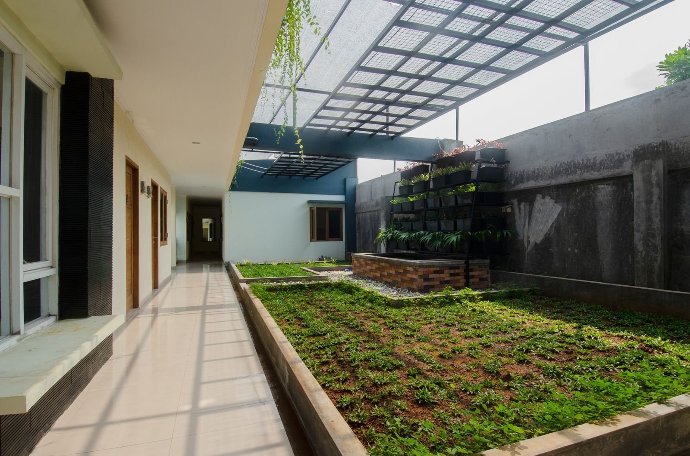

Case file 1 · Hospital & care gardens
St Aldhelm's Hospital courtyard, Bath
The brief: a 610 m² internal courtyard for patients, visitors and staff breaks — somewhere green to sit within sight of the wards. The constraint arrived with the brief, and it was not money: the estates team could give the planting six hours a month, inside a grounds contract already stretched thin.
- Client type
- NHS trust
- Planted area
- 420 m² of 610 m²
- Planted
- Autumn 2023
- Care budget
- 6 h/month, estates team
- Status
- Established — year-3 review complete
Decisions
The maintenance truth was negotiated before a single plant was chosen. Priced honestly, the trust's first sketch — perennial drifts on every side — needed roughly sixty hours a month of skilled care: ten times the budget. So the care was concentrated where patients actually sit: one 38 m² perennial bed at the entrance, and the remaining 382 m² in groundcover, shrubs and nine small trees. A 7,500 L rain tank went under the terrace, and there is no lawn — the mowing hours were worth more spent on the beds.
Outcome, year one
Losses came in at 6.2% of 2,860 plants against the printed 8% allowance — every loss replaced under the terms, in the same autumn, at no cost to the trust. Establishment water totalled 33,900 L, of which the rain tank supplied 58%. Care ran at 5.7 h/month against the 6 budgeted: the scheme fit the team that had to keep it.
Outcome, year three
Canopy cover measured at 31% by grid-point survey in summer 2026, on the way to a 40% design target at year five. The estates manager's verdict is on Sheet 01; the short version is that the courtyard is the most used outdoor space in the hospital — because it was designed around six hours, not sixty.
